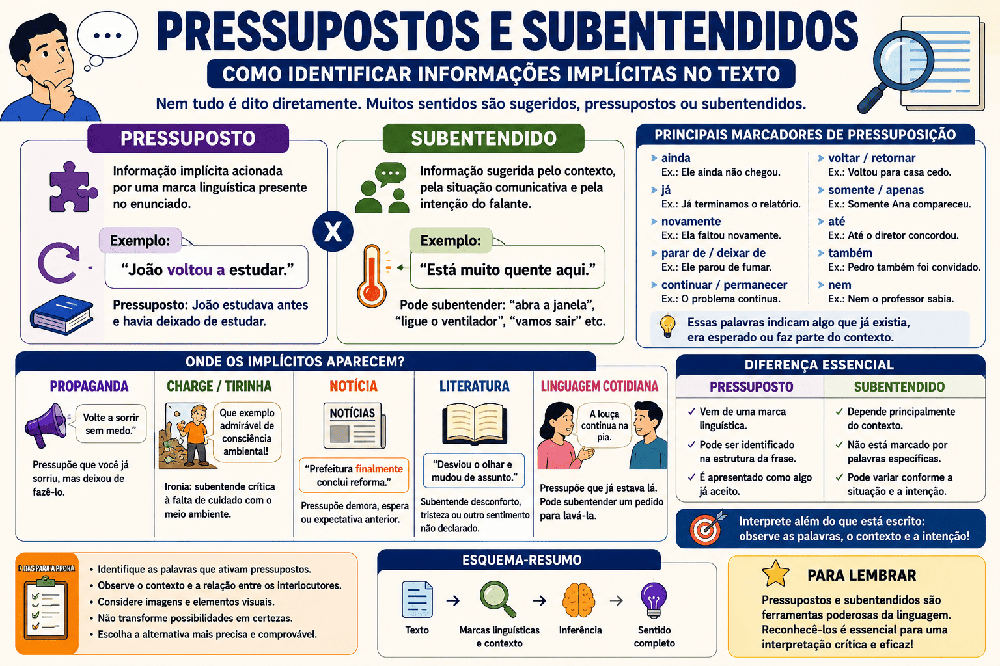

Pressupostos e Subentendidos: Como Identificar Informações Implícitas no Texto
Nem tudo o que comunicamos aparece de maneira direta nas palavras. Em muitas situações, uma frase transmite informações que não foram declaradas explicitamente, mas que podem ser percebidas por meio de marcas linguísticas, do contexto, da intenção do falante e do conhecimento compartilhado entre os interlocutores.
É nesse campo das informações implícitas que se encontram os pressupostos e os subentendidos. Esses dois mecanismos são fundamentais para a construção dos sentidos e aparecem com frequência em conversas, propagandas, notícias, charges, tirinhas, textos literários e questões de interpretação textual.
Compreender a diferença entre pressuposto e subentendido ajuda o leitor a perceber ironias, críticas, opiniões, intenções persuasivas e mensagens sugeridas. Essa habilidade é especialmente importante no ENEM, no PAES UEMA, em vestibulares, concursos públicos e avaliações escolares.

O que são informações explícitas e implícitas?
Antes de estudar os pressupostos e os subentendidos, é necessário compreender a diferença entre informações explícitas e informações implícitas.
Informação explícita
É aquela que aparece diretamente no texto. O leitor pode localizá-la nas palavras e nas frases apresentadas pelo autor.
Exemplo: “Marina chegou atrasada à reunião.”
A informação explícita é que Marina chegou atrasada.
Informação implícita
É aquela que não está escrita de forma direta, mas pode ser identificada por meio de pistas linguísticas, contextuais ou discursivas.
Exemplo: “Marina chegou atrasada novamente.”
Além do atraso atual, entende-se que Marina já havia chegado atrasada em outra ocasião.
Esquema inicial
Informação explícita: está declarada no texto.
Informação implícita: precisa ser percebida ou inferida.
Pressuposto: é provocado por uma marca linguística do enunciado.
Subentendido: depende principalmente do contexto e da intenção comunicativa.
O que é pressuposto?
O pressuposto é uma informação implícita que pode ser recuperada a partir de uma palavra, expressão ou construção linguística presente no enunciado.
Essa informação funciona como um ponto de partida assumido pelo falante. Mesmo que não seja declarada diretamente, ela é apresentada como algo já conhecido, aceito ou considerado verdadeiro pelos interlocutores.
Exemplo de pressuposto
“Carlos parou de reclamar do trabalho.”
A informação explícita é que Carlos não reclama mais.
O pressuposto é que Carlos reclamava do trabalho anteriormente.
Esse sentido é ativado pela expressão parou de, que indica a interrupção de uma ação que acontecia antes.
O pressuposto não depende apenas da imaginação do leitor. Ele é sustentado por um elemento identificável na estrutura da frase.
O que são marcadores de pressuposição?
Os marcadores de pressuposição são palavras ou construções que introduzem informações implícitas no enunciado. Ao identificar esses elementos, o leitor consegue recuperar o que o texto considera previamente verdadeiro.
Entre os marcadores mais frequentes estão advérbios, verbos de mudança ou permanência, expressões iterativas, palavras de inclusão e algumas estruturas sintáticas.
1. Advérbios como “ainda”, “já” e “novamente”
Frase: “Pedro ainda trabalha naquela empresa.”
Informação explícita: Pedro trabalha naquela empresa no momento.
Pressuposto: Pedro já trabalhava naquela empresa antes.
Frase: “A professora já corrigiu as provas.”
Informação explícita: as provas foram corrigidas.
Pressuposto: havia uma expectativa ou possibilidade de que a correção ainda não tivesse ocorrido.
Frase: “O aluno faltou novamente.”
Informação explícita: o aluno faltou na ocasião mencionada.
Pressuposto: ele já havia faltado antes.
2. Verbos que indicam mudança de estado
Alguns verbos pressupõem a existência de uma situação anterior diferente da atual.
Frase: “A cidade tornou-se mais movimentada.”
Pressuposto: anteriormente, a cidade era menos movimentada.
Frase: “O estudante começou a participar das aulas.”
Pressuposto: antes, ele não participava ou participava pouco.
3. Expressões como “parar de” e “deixar de”
Essas construções indicam a interrupção de uma ação ou comportamento anterior.
Frase: “Ela deixou de publicar nas redes sociais.”
Pressuposto: ela publicava nas redes sociais anteriormente.
Frase: “O motorista parou de usar o celular ao volante.”
Pressuposto: o motorista usava o celular ao volante.
4. Verbos que indicam permanência ou continuidade
Verbos e expressões como continuar, permanecer e seguir indicam que determinada situação já existia antes.
Frase: “A escola continua sem biblioteca.”
Pressuposto: a escola já não possuía biblioteca anteriormente.
Frase: “O problema permanece sem solução.”
Pressuposto: o problema já estava sem solução.
5. Verbos que indicam repetição ou retorno
Verbos como voltar, retornar, repetir e recomeçar pressupõem uma ocorrência anterior.
Frase: “Ela voltou a estudar para o vestibular.”
Pressuposto: ela estudava antes e havia interrompido os estudos.
Frase: “A equipe repetiu o mesmo erro.”
Pressuposto: o erro já havia sido cometido.
6. Verbos factivos
Alguns verbos apresentam como verdadeira a informação expressa pela oração que os acompanha. São chamados de verbos factivos.
Entre eles estão saber, perceber, lamentar, descobrir e reconhecer.
Frase: “A direção lamentou que o evento fosse cancelado.”
Pressuposto: o evento foi cancelado.
Frase: “Joana descobriu que o documento estava incompleto.”
Pressuposto: o documento estava incompleto.
7. Expressões de inclusão
Palavras como também, até, inclusive e nem podem introduzir pressupostos relacionados à inclusão de outros elementos.
Frase: “Lucas também participou da reunião.”
Pressuposto: outras pessoas participaram da reunião.
Frase: “Até o diretor reconheceu o problema.”
Pressuposto: outras pessoas reconheceram o problema e havia alguma expectativa de que o diretor não o reconhecesse.
8. Expressões de exclusão ou restrição
Palavras como somente, apenas, só e exclusivamente restringem uma informação e podem gerar sentidos pressupostos.
Frase: “Somente Ana entregou a atividade.”
Informação explícita: Ana entregou a atividade.
Informação associada: as demais pessoas consideradas no contexto não entregaram.
9. Orações adjetivas explicativas
As orações adjetivas explicativas acrescentam uma característica apresentada pelo enunciador como válida para o termo a que se referem.
Frase: “Os estudantes, que estavam cansados, pediram o encerramento da aula.”
Pressuposto: os estudantes estavam cansados.
As vírgulas indicam que a informação é explicativa e se aplica ao conjunto mencionado.
10. Perguntas que contêm pressupostos
Uma pergunta também pode apresentar uma informação como previamente verdadeira.
Pergunta: “Por que você chegou atrasado novamente?”
A pergunta solicita a causa do atraso, mas pressupõe que:
- a pessoa chegou atrasada;
- ela já havia se atrasado antes.
Atenção às perguntas tendenciosas
Algumas perguntas introduzem pressupostos que podem não ser verdadeiros.
Na pergunta “Quando você deixará de ser irresponsável?”, a formulação pressupõe que o interlocutor é irresponsável. Antes de responder ao advérbio interrogativo “quando”, seria necessário avaliar se esse pressuposto é válido.
O pressuposto permanece na negação?
Uma característica importante do pressuposto é que ele geralmente permanece mesmo quando a frase é negada, transformada em pergunta ou apresentada como possibilidade.
Afirmação
“Paulo parou de fumar.”
Pressuposto: Paulo fumava.
Negação
“Paulo não parou de fumar.”
O pressuposto continua sendo que Paulo fumava.
Pergunta
“Paulo parou de fumar?”
A pergunta ainda parte da ideia de que Paulo fumava.
Essa permanência é frequentemente utilizada para distinguir o conteúdo pressuposto da informação principal apresentada pelo enunciado.
O que é subentendido?
O subentendido é uma informação sugerida pelo enunciado, mas que não está diretamente marcada por uma palavra ou construção específica. Sua identificação depende do contexto, da situação comunicativa, da relação entre os interlocutores e da intenção de quem fala.
Exemplo de subentendido
Uma pessoa entra em uma sala e afirma:
“Está muito quente aqui.”
A frase informa explicitamente que a temperatura está elevada. Dependendo do contexto, porém, ela pode subentender pedidos como:
- abra a janela;
- ligue o ventilador;
- reduza a temperatura do ar-condicionado;
- vamos sair deste ambiente.
Nenhum desses pedidos está marcado obrigatoriamente na frase. O sentido depende da situação em que ela foi pronunciada.
Por isso, um mesmo enunciado pode produzir diferentes subentendidos em contextos distintos.
Como identificar um subentendido?
Para identificar um subentendido, o leitor deve considerar mais do que o significado literal das palavras. É necessário reconstruir a situação comunicativa.
Perguntas para identificar subentendidos
- Quem produziu o enunciado?
- Para quem ele foi dirigido?
- Em que situação a frase foi dita?
- Qual é a relação entre os interlocutores?
- O que o falante pretende provocar?
- Existe ironia, crítica, cobrança ou pedido indireto?
- Que conhecimento de mundo é necessário para compreender a mensagem?
Exemplo de pedido indireto
Durante uma aula, o professor diz:
“Algumas pessoas ainda estão conversando.”
A afirmação pode subentender:
“Parem de conversar e prestem atenção.”
O pedido não foi formulado diretamente, mas pode ser compreendido pela situação.
Exemplo de crítica indireta
Depois de alguém chegar duas horas atrasado, outra pessoa comenta:
“Você é realmente muito pontual.”
O sentido literal apresenta um elogio, mas o contexto permite compreender uma crítica irônica à falta de pontualidade.
Exemplo de recusa indireta
— Você vai à festa hoje?
— Tenho uma prova muito importante amanhã cedo.
A resposta não contém a palavra “não”, mas subentende que a pessoa provavelmente não irá à festa porque precisa estudar ou descansar.
Qual é a diferença entre pressuposto e subentendido?
Pressuposto
É acionado por uma marca linguística presente no enunciado.
Pode ser recuperado por meio da análise de palavras, expressões e construções gramaticais.
Costuma ser apresentado como uma informação previamente aceita.
Exemplo: “Marta voltou a estudar.”
Pressuposto: Marta estudava antes.
Subentendido
Depende principalmente do contexto e da intenção comunicativa.
Não precisa estar associado a uma palavra específica.
Pode variar conforme a situação e admite maior possibilidade de interpretação.
Exemplo: “A prova é amanhã.”
Em determinado contexto, pode subentender: “Você deveria estudar.”
Diferença essencial
No pressuposto, o leitor pode apontar uma marca linguística que sustenta a informação implícita.
No subentendido, o sentido é construído principalmente pela situação comunicativa e pela intenção dos interlocutores.
Pressuposto, subentendido e inferência são a mesma coisa?
Os três conceitos estão relacionados, mas não são exatamente iguais.
A inferência é o processo geral pelo qual o leitor deduz uma informação que não foi apresentada diretamente. Para inferir, ele combina pistas textuais, contexto e conhecimento de mundo.
Os pressupostos e os subentendidos são formas específicas de informação implícita que podem ser recuperadas por meio de inferências.
Relação entre os conceitos
Inferência: processo de dedução realizado pelo leitor.
Pressuposto: informação implícita ativada por uma marca linguística.
Subentendido: informação sugerida pelo contexto e pela intenção comunicativa.
Para aprofundar esse processo de leitura, consulte também o conteúdo sobre inferências na interpretação textual .
Pressupostos e subentendidos na linguagem cotidiana
Grande parte das interações diárias depende de conhecimentos compartilhados e mensagens indiretas. Isso permite que os falantes comuniquem críticas, pedidos, recusas e avaliações sem declarar tudo de maneira explícita.
Situação 1
— Você terminou o relatório?
— Eu passei a manhã inteira em reuniões.
A resposta subentende que o relatório provavelmente não foi concluído.
Situação 2
“A Júlia também foi convidada.”
O termo também pressupõe que outra pessoa ou outras pessoas foram convidadas.
Situação 3
“A louça continua na pia.”
O verbo continua pressupõe que a louça já estava na pia.
Dependendo de quem fala e da situação, a frase pode subentender uma cobrança para que alguém lave a louça.
Um mesmo enunciado pode conter os dois fenômenos
Na frase “A louça continua na pia”, existe um pressuposto linguístico: a louça já estava na pia.
Também pode existir um subentendido contextual: alguém deve lavar a louça.
Nas questões, observe exatamente qual informação o comando solicita.
Pressupostos e subentendidos na publicidade
A publicidade utiliza informações implícitas para despertar desejos, criar necessidades, valorizar produtos e influenciar decisões. Muitas campanhas evitam fazer determinadas afirmações de modo direto, mas induzem o público a chegar a certas conclusões.
Exemplo publicitário
“Volte a sorrir sem medo.”
O verbo voltar pressupõe que o consumidor já sorriu sem medo em algum momento, mas deixou de fazê-lo.
Dependendo do produto anunciado, pode haver o subentendido de que a pessoa possui um problema estético, odontológico ou emocional que será resolvido pelo serviço oferecido.
Outro exemplo
“Você ainda perde tempo com processos manuais?”
O advérbio ainda pressupõe que o interlocutor realiza processos manuais.
A pergunta também sugere que essa prática é ultrapassada e que o produto anunciado representa uma solução mais eficiente.
Em textos publicitários, é importante analisar palavras, imagens, cores, expressões faciais, slogans e a relação entre linguagem verbal e não verbal.
Para ampliar essa análise, estude também os tipos de linguagem verbal, não verbal e mista .
Pressupostos e subentendidos em charges, cartuns e tirinhas
Charges e tirinhas frequentemente constroem humor e crítica por meio de sentidos implícitos. O leitor precisa relacionar falas, imagens, expressões faciais, conhecimentos sociais e acontecimentos conhecidos.
Exemplo de situação
Em uma tirinha, um personagem observa uma grande quantidade de lixo na rua e afirma:
“Que exemplo admirável de consciência ambiental!”
Isoladamente, a frase parece elogiosa. Entretanto, a imagem contradiz o sentido literal e permite identificar um subentendido irônico: a população não demonstra consciência ambiental.
Nesses gêneros, o leitor deve evitar interpretar apenas as palavras. A imagem pode confirmar, ampliar ou contrariar o conteúdo verbal.
Pressupostos e subentendidos em notícias e reportagens
Textos jornalísticos também podem conter informações implícitas. A escolha de verbos, adjetivos, advérbios e formas de apresentação dos fatos pode orientar a interpretação do leitor.
Manchete: “Prefeitura finalmente inicia reforma da escola.”
O advérbio finalmente pressupõe que a reforma era esperada havia algum tempo ou que ocorreu depois de demora.
Além de informar o início da obra, a escolha lexical pode introduzir uma avaliação sobre a lentidão do processo.
Manchete: “Governo admite que o problema ainda não foi resolvido.”
O verbo admite pode sugerir que o reconhecimento ocorreu com dificuldade ou após resistência.
O advérbio ainda pressupõe que havia expectativa de solução anterior.
A análise dessas escolhas contribui para uma leitura crítica e ajuda a distinguir informações, avaliações e direcionamentos argumentativos.
Veja também: fatos e opiniões em reportagens .
Pressupostos e subentendidos nos textos literários
Na literatura, os sentidos implícitos enriquecem a construção das personagens, dos conflitos e dos temas. Silêncios, gestos, descrições, ironias e falas indiretas podem revelar sentimentos e tensões que não são declarados.
Exemplo narrativo
“Quando ouviu o nome do antigo amigo, Helena desviou o olhar e mudou de assunto.”
O texto não informa diretamente o que Helena sente. No entanto, sua reação permite inferir que o nome mencionado provoca desconforto, tristeza, culpa, ressentimento ou outra emoção negativa.
A interpretação exata dependerá de outras pistas oferecidas pela narrativa.
Não transforme uma possibilidade em certeza
Um comportamento pode permitir diferentes inferências. Se o texto não oferece elementos suficientes, não se deve afirmar categoricamente uma causa específica.
Dizer que Helena demonstrou desconforto é mais seguro do que afirmar, sem outras evidências, que ela odiava o antigo amigo.
Relação entre implícitos e ironia
A ironia ocorre quando o sentido pretendido não corresponde ao significado literal do enunciado. Para identificá-la, o leitor precisa perceber a incompatibilidade entre as palavras e o contexto.
Após um estudante esquecer todos os materiais, o professor comenta:
“Vejo que você veio muito preparado hoje.”
O sentido literal elogia a preparação do estudante. O contexto, porém, permite compreender o subentendido irônico: ele não se preparou adequadamente.
Em questões de prova, o humor e a crítica costumam surgir dessa oposição entre o que foi dito e o que efetivamente se pretende comunicar.
Relação entre implícitos e argumentação
Em textos argumentativos, pressupostos podem ser usados para apresentar uma ideia como se já fosse aceita pelo leitor. Essa estratégia reduz a necessidade de demonstrar diretamente determinada afirmação.
“Precisamos corrigir novamente os erros provocados pela falta de planejamento.”
A frase pressupõe que:
- existem erros;
- os erros foram provocados pela falta de planejamento;
- esses erros já precisaram ser corrigidos anteriormente.
Um leitor crítico deve avaliar se os pressupostos apresentados pelo autor são sustentados por evidências ou apenas introduzidos como verdades aparentemente indiscutíveis.
Para aprofundar a leitura de textos argumentativos, consulte: identificação da tese e dos argumentos .
Como os pressupostos podem orientar ou manipular a interpretação?
Uma informação pressuposta tende a receber menos atenção do que a afirmação principal. Por esse motivo, discursos políticos, publicitários e opinativos podem inserir avaliações controversas dentro de perguntas ou construções que as apresentam como previamente aceitas.
“Qual é a melhor maneira de reparar os prejuízos causados pela nova medida?”
Antes de discutir a “melhor maneira”, é necessário observar que a pergunta pressupõe que:
- a nova medida causou prejuízos;
- esses prejuízos precisam ser reparados.
Caso essas informações não tenham sido demonstradas, a pergunta pode direcionar a resposta do interlocutor.
Leia criticamente as perguntas
Não aceite automaticamente tudo o que uma pergunta apresenta como verdadeiro.
Identifique as informações pressupostas e verifique se elas são confirmadas pelo texto ou pela situação analisada.
Como o ENEM cobra pressupostos e subentendidos?
No ENEM, o assunto geralmente não aparece apenas como uma definição teórica. As questões apresentam textos, propagandas, tirinhas, poemas, campanhas, notícias ou diálogos e exigem que o candidato identifique o sentido produzido.
Entre as habilidades que podem ser avaliadas estão:
- identificar informações implícitas;
- reconhecer a intenção comunicativa;
- compreender efeitos de ironia e humor;
- analisar a escolha de advérbios e verbos;
- interpretar críticas e pedidos indiretos;
- relacionar elementos verbais e não verbais;
- reconhecer o posicionamento do enunciador;
- avaliar estratégias de persuasão.
Para uma preparação mais ampla, acesse: Interpretação Textual para o ENEM .
Como o PAES UEMA pode cobrar esse conteúdo?
No PAES UEMA, os sentidos implícitos podem aparecer em questões de interpretação de textos literários e não literários. O candidato pode precisar relacionar marcas linguísticas, contexto, características das personagens, ironia, crítica social e efeitos de sentido.
O conteúdo pode ser explorado por meio de:
- fragmentos de crônicas, poemas e narrativas;
- falas de personagens;
- charges, tirinhas e propagandas;
- relações entre texto e imagem;
- advérbios e verbos que introduzem pressupostos;
- reescritas que alteram informações implícitas;
- análise de ironia, humor e crítica;
- identificação da intenção do enunciador.
Veja também o guia de interpretação de texto para o PAES UEMA 2027 .
Principais armadilhas nas questões
1. Confundir pressuposto com informação explícita
A informação explícita está escrita diretamente. O pressuposto precisa ser recuperado a partir de uma marca linguística.
“Rafael voltou a praticar esportes.”
Explícito: Rafael pratica esportes no momento.
Pressuposto: Rafael praticava esportes antes e havia interrompido a atividade.
2. Confundir pressuposto com opinião pessoal
O pressuposto deve estar sustentado pela estrutura do enunciado. Uma interpretação baseada apenas na experiência ou na opinião do leitor não é suficiente.
3. Atribuir certeza a um subentendido apenas possível
Como o subentendido depende do contexto, é necessário verificar se existem pistas suficientes para sustentar a interpretação proposta.
4. Ignorar o sentido de uma palavra aparentemente pequena
Advérbios como ainda, já, novamente, também e finalmente podem alterar significativamente a interpretação.
5. Desconsiderar a imagem
Em tirinhas, charges, memes e propagandas, o subentendido muitas vezes resulta da relação entre a linguagem verbal e a linguagem visual.
6. Aceitar uma alternativa que exagera a inferência
Uma opção pode partir de uma pista verdadeira e chegar a uma conclusão que o texto não autoriza.
Texto: “Ao receber a mensagem, Paulo ficou em silêncio.”
É possível inferir que a mensagem provocou alguma reação. Entretanto, sem outras pistas, não se pode afirmar com certeza que ele ficou triste, culpado ou irritado.
Para desenvolver essa análise, consulte também: como eliminar alternativas erradas em interpretação textual .
Estratégia para resolver questões sobre implícitos
Passo a passo
- Leia o comando antes de analisar as alternativas.
- Identifique a informação explicitamente apresentada.
- Procure advérbios, verbos e expressões que ativem pressupostos.
- Observe o contexto em que a fala ou o texto foi produzido.
- Analise a relação entre os interlocutores.
- Verifique a presença de ironia, humor, crítica ou pedido indireto.
- Considere os elementos visuais, quando existirem.
- Separe o que é linguisticamente pressuposto do que é contextualmente sugerido.
- Elimine interpretações que dependam de informações não fornecidas.
- Escolha a alternativa mais precisa e comprovável.
Teste rápido para diferenciar
Pergunte:
“Qual palavra ou estrutura produz essa informação?”
Caso seja possível apontar uma marca linguística, provavelmente há um pressuposto.
Caso o sentido dependa principalmente da situação e da intenção do falante, provavelmente há um subentendido.
Exemplos comentados
Exemplo 1
“A empresa ainda não respondeu às reclamações.”
O advérbio ainda pressupõe que uma resposta era esperada antes do momento mencionado.
A frase também pode produzir um efeito crítico, sugerindo demora ou falta de atenção da empresa.
Exemplo 2
“Até Marcos conseguiu entender a explicação.”
A palavra até inclui Marcos em um conjunto e indica que sua compreensão era considerada menos provável.
Dependendo do contexto, a frase pode subentender uma avaliação negativa sobre a capacidade de Marcos.
Exemplo 3
— Você pode fechar a janela?
Embora a estrutura literal pergunte sobre a capacidade do interlocutor, o sentido comunicativo mais provável é um pedido para que a janela seja fechada.
Exemplo 4
“O candidato reconheceu que havia cometido um erro.”
O verbo reconheceu apresenta como pressuposta a informação de que o candidato havia cometido um erro.
Exemplo 5
Ao observar o quarto desorganizado, uma mãe diz:
“Que ambiente agradável!”
A incompatibilidade entre a fala e a situação produz ironia. O enunciado subentende uma crítica à desorganização do quarto.
Quiz sobre pressupostos e subentendidos
Questões de interpretação — nível avançado
Questão 1 — Na frase “Marina voltou a frequentar a biblioteca”, qual informação é pressuposta?
Questão 2 — Em “A escola continua sem acesso adequado à internet”, o verbo destacado pressupõe que:
Questão 3 — Durante uma reunião, o coordenador afirma: “Alguns relatórios ainda não foram entregues.” Considerando o contexto, a fala pode subentender:
Questão 4 — Na frase “A diretora lamentou que o projeto tivesse sido interrompido”, é correto afirmar que:
Questão 5 — Um estudante chega atrasado e ouve do professor: “Como sempre, você demonstra grande pontualidade.” O efeito de sentido depende:
Questão 6 — Na manchete “Prefeitura finalmente conclui reforma do hospital”, o termo “finalmente”:
Questão 7 — Em uma campanha, lê-se: “Você ainda desperdiça água ao escovar os dentes?”. A pergunta pressupõe que:
Questão 8 — Em “Até João compreendeu a ironia do texto”, a palavra “até” sugere que:
Questão 9 — Ao observar uma janela aberta durante uma noite fria, uma pessoa diz: “Está ficando muito frio nesta sala.” O subentendido mais provável é:
Questão 10 — Assinale a alternativa que apresenta corretamente a diferença entre pressuposto e subentendido:
Resumo sobre pressupostos e subentendidos
- Informações explícitas são apresentadas diretamente no texto.
- Informações implícitas precisam ser recuperadas pelo leitor.
- O pressuposto é ativado por uma marca linguística.
- O subentendido depende principalmente do contexto.
- Advérbios como “ainda”, “já” e “novamente” podem gerar pressupostos.
- Verbos como “continuar”, “parar”, “voltar” e “descobrir” também podem introduzir informações pressupostas.
- Pedidos, críticas, recusas e elogios irônicos podem ser comunicados por subentendidos.
- O mesmo enunciado pode conter pressupostos e subentendidos.
- Charges, tirinhas e propagandas exigem análise integrada de texto e imagem.
- Uma boa interpretação deve ser comprovada por pistas linguísticas e contextuais.
Conclusão
Compreender pressupostos e subentendidos é fundamental para interpretar textos além de sua superfície. Esses mecanismos mostram que a comunicação não depende apenas das palavras pronunciadas ou escritas, mas também das informações assumidas, das intenções dos interlocutores e do contexto em que o enunciado circula.
O pressuposto pode ser identificado por meio de marcas linguísticas, como advérbios, verbos e determinadas construções. O subentendido, por sua vez, exige uma análise mais ampla da situação comunicativa.
Ao desenvolver essa habilidade, o estudante se torna capaz de reconhecer críticas, ironias, estratégias persuasivas, pedidos indiretos e posicionamentos implícitos. Isso fortalece a leitura crítica e melhora o desempenho no ENEM, no PAES UEMA, em vestibulares, concursos e avaliações escolares.
Perguntas frequentes sobre pressupostos e subentendidos
O que é pressuposto?
Pressuposto é uma informação implícita ativada por uma palavra, expressão ou construção linguística presente no enunciado.
O que é subentendido?
Subentendido é uma informação sugerida pela situação comunicativa, pela intenção do falante e pelo conhecimento compartilhado entre os interlocutores.
Qual é a principal diferença entre pressuposto e subentendido?
O pressuposto possui uma marca linguística identificável. O subentendido depende principalmente do contexto em que o enunciado é produzido.
Quais palavras podem indicar pressupostos?
Palavras e expressões como “ainda”, “já”, “novamente”, “também”, “até”, “continuar”, “parar de”, “deixar de” e “voltar a” frequentemente introduzem pressupostos.
O pressuposto permanece quando a frase é negada?
Geralmente, sim. Em “Paulo parou de fumar” e “Paulo não parou de fumar”, permanece o pressuposto de que Paulo fumava.
Uma frase pode ter mais de um pressuposto?
Sim. Uma frase pode conter diferentes marcas linguísticas e introduzir várias informações pressupostas simultaneamente.
O mesmo enunciado pode conter pressuposto e subentendido?
Sim. Em “A louça continua na pia”, pressupõe-se que ela já estava na pia, e pode-se subentender uma cobrança para que alguém a lave.
Qual é a relação entre subentendido e ironia?
Na ironia, o sentido pretendido costuma ser diferente ou oposto ao sentido literal. O leitor identifica esse subentendido pela relação entre as palavras e o contexto.
Como evitar inferências incorretas?
É necessário basear a interpretação em pistas do texto, considerar o contexto e evitar transformar possibilidades em certezas não comprovadas.
Como esse conteúdo aparece nas provas?
As provas podem solicitar a identificação de informações implícitas, intenções comunicativas, ironias, críticas, pressupostos linguísticos e efeitos produzidos pela relação entre texto e imagem.
Conteúdos relacionados
Inferências na Interpretação Textual
Aprenda a identificar informações implícitas, relacionar pistas textuais e evitar conclusões sem comprovação.
Como Eliminar Alternativas Erradas
Conheça estratégias para reconhecer extrapolações, contradições e alternativas parcialmente corretas.
Interpretação Textual para o ENEM
Veja técnicas de leitura, exemplos e orientações para melhorar o desempenho nas questões de Linguagens.
Interpretação de Texto no PAES UEMA 2027
Estude compreensão textual, informações implícitas e estratégias de interpretação para o vestibular da UEMA.
Linguagem Verbal, Não Verbal e Mista
Entenda como palavras, imagens e símbolos se relacionam na construção dos sentidos.
Fatos e Opiniões em Reportagens
Aprenda a diferenciar dados verificáveis, avaliações, julgamentos e posicionamentos.
Tese e Argumentos em Textos Dissertativos
Identifique o posicionamento central do autor e as ideias utilizadas para sustentá-lo.
Intertextualidade no PAES UEMA 2027
Compreenda como os textos estabelecem diálogos, retomam ideias e produzem novos sentidos.
Explore as principais seções
Referências
- DUCROT, Oswald. O dizer e o dito. Campinas: Pontes.
- FIORIN, José Luiz. Elementos de análise do discurso. São Paulo: Contexto.
- ILARI, Rodolfo. Introdução à semântica: brincando com a gramática. São Paulo: Contexto.
- KOCH, Ingedore Villaça; ELIAS, Vanda Maria. Ler e compreender: os sentidos do texto. São Paulo: Contexto.
- PLATÃO, Francisco Savioli; FIORIN, José Luiz. Para entender o texto: leitura e redação. São Paulo: Ática.
Explore Outros Conteúdos
Continue seus estudos acessando outras seções do site Mestre Kira: